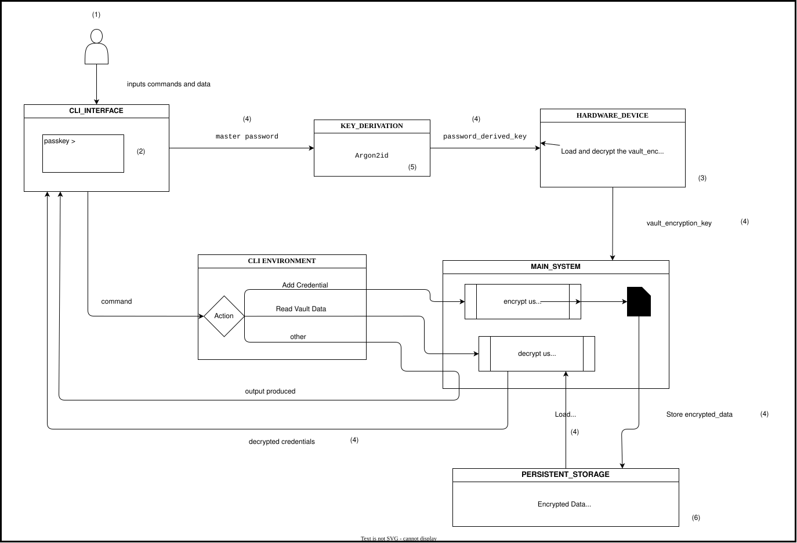

| Analyse Model | Threat Analysis | Mitigation Plan | |||
|---|---|---|---|---|---|
| Artifact in Diagram | TM Element | Applicable Threat | Threat Description | Plan to Mitigate the Risk | Implementation |
| (1) User | Actor | Spoofing | Attacker could use user device and pose as user to access vault. Impact : Leaked vault content |
Use user authentication and login before vault access to prevent unauthorised access. | Use master_password to authenticate user. |
| (2) CLI Interface | Data Flow | Data Leak | Attacker can user the bash history to retrieve sensitive information. Impact : Leaked authorisation credentials (master_password) |
Use application layer over bash to prevent history and create session. | CLI Interface creates application layer so information clears with session. |
| (3) Hardware Device | Physical Devie | Theft | Attacker could gain physical possession of hardware device storing vault_encryption_key. Impace : Compromised Vault and Data |
Store the vault_key in encrypted form in hardware device. | vault_key is encrypted using password_derived_key from master_password. |
| (4) Loaded and Unencrypted Data | Data | RAM Paging / Memory Dumping | Attacker can use data loaded in memory for a session by user and swap it to disk. Impact : Data leak |
Use memory locking for allocated memory of sensitive data elements to prevent RAM paging / dumping. | Custom Allocator for allocating locked memory for sensitive data storing elements, [libsodium memlock](https://libsodium.gitbook.io/doc/memory_management). |
| (5) Key Derivation | Cryptographic Operation | Brute Force Attack | Attacker can offline brute force and derive password_derived_key. | Derive password_derived_key from master_password using secure and tested cryptographic algorithms. | Use Argon2id to derive password_derived_key degrading the performance of brute force attack. |
| (6) Persistent Storage | Data | Tampering | Attacker can tamper vault / key file and corrupt contents. Impact : Malicious data injection or denial of access. |
Vault content should be authenticated before decryption operation. | Use XSalsa20-Poly1308, AEAD encryption algorithm that uses authentication tag to detect tampering and halt process. |
1. User : User manages and keep secret the master_password and maintain timed backup for encrypted_vault and encrypted_key (inside hardware key) for data security.
2. Host OS Integrity : Host OS is no compromised by a root level keylogger. It can directly read data loaded in memory and cache.
3. Availability : The vault_file only protects against tampering, and does not prevent from file deletion / corruption from tampering.
1. Backup and Data Restoration : Data backup, restoration, and recovery are outside the scope of the system. The system is not responsible for recovering data that has been accidentally or intentionally deleted, corrupted, or otherwise made unavailable, including as a result of unauthorized access or actions.
2. Direct memory (RAM) access : Protection of sensitive data while it is resident in system memory (RAM) is not guaranteed against an attacker capable of directly inspecting process memory.
3. Compromised execution environment : The threat model assumes that the underlying operating system, runtime environment, and execution infrastructure are trusted. Security guarantees do not extend to scenarios in which these components have already been compromised.